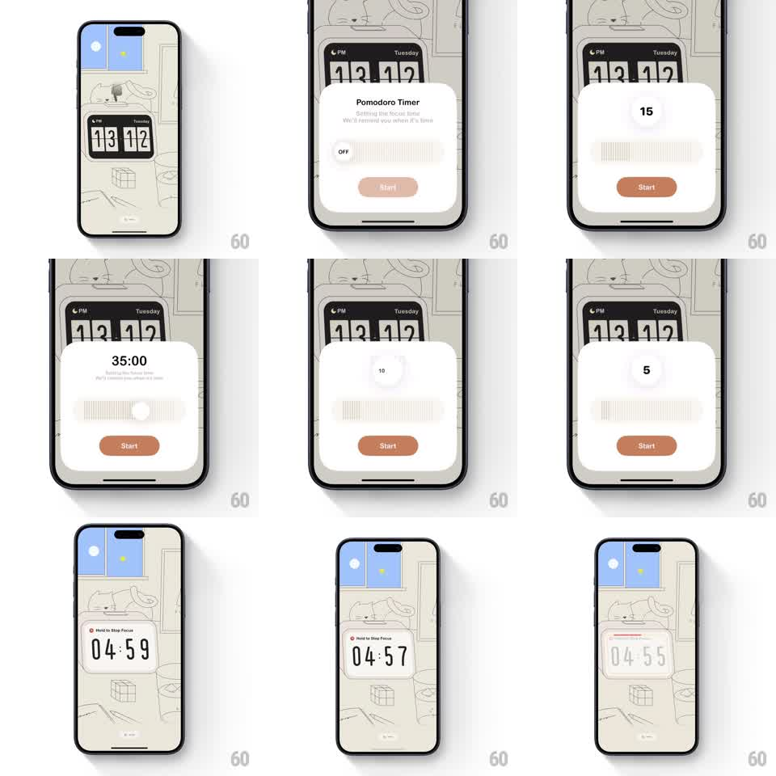

Media
Frame-by-frame

Rebuild this interaction 1:1: a pomodoro timer card over the flip-clock home screen - scrub a tick-mark slider to set minutes (numbers update with a blurred crossfade), tap Start, and the home screen shows a countdown card with a hold-to-stop pill whose ring fills as you press.

Rebuild this interaction 1:1: a pomodoro timer card over the flip-clock home screen - scrub a tick-mark slider to set minutes (numbers update with a blurred crossfade), tap Start, and the home screen shows a countdown card with a hold-to-stop pill whose ring fills as you press.
## Integration
Integration: stack-agnostic spec - springs given as stiffness/damping, timed motions as duration + curve; map every value to your framework and animation library of choice.
## Scene
Cream line-art home screen with flip clock (13 12) and window. A white card slides up: "Pomodoro Timer / Set the timer for your focus session. We'll remind you when it's time", a value readout (OFF, then 15, 35:00, 5), a horizontal slider of fine vertical ticks with a round thumb, and a clay-colored Start button. After Start the home screen shows a countdown card (04:59) with a red-accented "Hold to Stop Focus" pill.
## Motion spec
Pattern: scrub-set timer slider + hold-to-stop ring.
- Card enters from the bottom (spring ~300/26, ~350ms) over the dimmed clock.
- Drag the thumb: ticks pass under it with a soft tick haptic per 5 minutes; the value readout swaps with a blurred crossfade (outgoing number blurs 4px + fades 120ms, incoming unblurs 180ms).
- Readout format switches contextually - under 10 shows minutes ("5"), larger values show mm:ss ("35:00").
- Release snaps to the nearest 5-minute tick (spring ~380/26, ~180ms); Start fills to full opacity when a value is set.
- Start: card slides down (300ms), home countdown card fades in with digits already running (flip-style per second, 300ms per flip).
- Hold the Stop pill: a circular ring around it fills clockwise (~1.2s linear); release early snaps the ring back (150ms); complete and the card fades out (250ms).
## Calibration
- Slider range ~5 to 120 minutes, 5-minute steps.
- The blurred crossfade sells the value changing mid-scrub - a hard swap reads laggy.
## Reduced motion
Value swaps without blur; countdown digits fade per second.
## Don't miss
- OFF state: thumb parked left, Start disabled until a value is set.
- The stop interaction is hold-to-confirm, not a tap - the ring must fill fully.